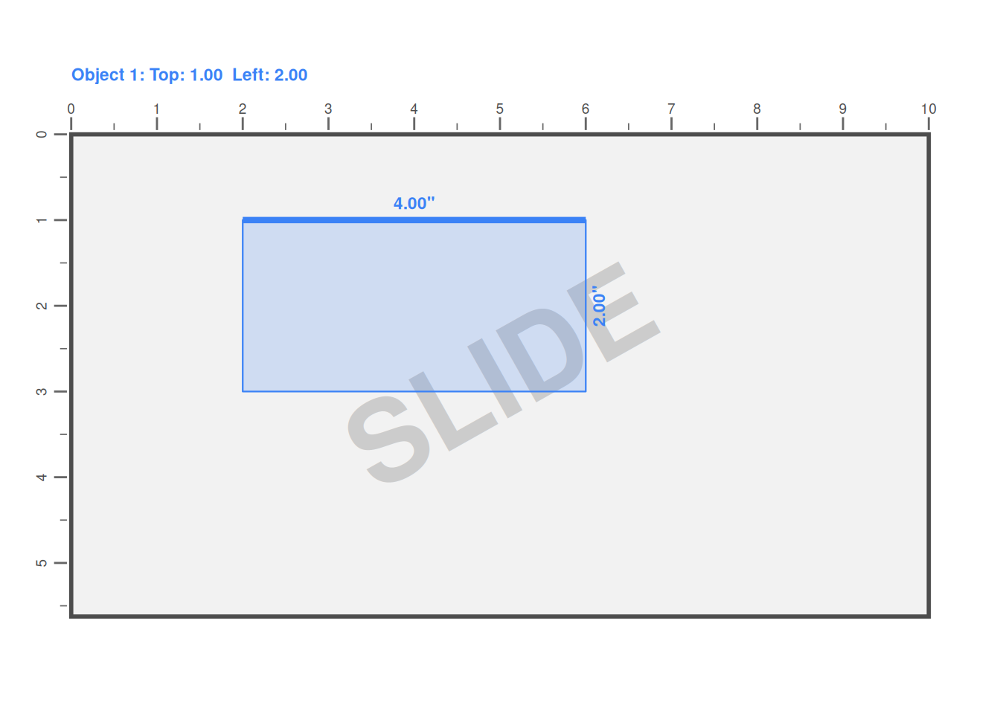

pos <- slide_position(
top = 1,
left = 2,
width = 4,
height = 2
)Overview
When building presentations programmatically, you need a robust system for controlling where objects appear on slides. The r2slides package provides exactly that through its positioning system, which treats every visual element—whether text, charts, or shapes—as a geometric object with explicit coordinates and dimensions.
The core abstraction is a slide_position object that captures location (top and left coordinates), size (width and height), rotation angle, and slide dimensions. All measurements are expressed in inches, which keeps the system intuitive and aligned with how designers typically think about slide layouts.
This positioning system is designed around several key principles: positions are explicit geometric objects, transformations are functional and composable, and layout logic can be abstracted and reused. Instead of scattering numeric coordinates throughout your slide-building code, you define positions once and reuse or transform them declaratively, enabling scalable slide generation across many datasets and presentations.
Creating a Position
You create positions using the slide_position() function, which takes coordinates and dimensions as its arguments. By default, slides are assumed to be 10 × 5.625 inches, matching Google Slides’ default dimensions, though you can specify different slide sizes when needed.1
This creates a rectangle positioned 1 inch from the top of the slide and 2 inches from the left edge, with dimensions of 4 inches wide by 2 inches tall. The coordinate system follows standard conventions: positions are defined relative to the top-left corner of the slide, with top increasing downward and left increasing to the right.
When you need to visualize what a position looks like during development, slide_position objects implement a plot() method that makes it easy to inspect layouts without rendering a full slide:
plot(pos)
This visual feedback can be faster than actually putting elements in the location on a slide. The thicker line indicates which side is considered the ‘top’ of the position, which becomes important when you start applying rotations.
Understanding Rotation
Rotation adds another dimension to positioning. When you specify a rotation angle in degrees, the object rotates clockwise around its center point. Critically, rotation doesn’t change the object’s intrinsic width and height—instead, it’s applied as an affine transformation.
rotated <- slide_position(
top = 1,
left = 1,
width = 3,
height = 1.5,
rotation = 30
)This distinction between intrinsic dimensions and rotated footprint becomes important in advanced layouts. The positioning system handles rotation correctly through computed affine transform components (scaleX, scaleY, shearX, shearY), ensuring that rotated objects render properly. For when you want to understand the un-rotated bounding boxes, the bounding_box() function calculates the smallest axis-aligned rectangle that contains one or more rotated objects.
r2slides provides a few convenient helpers for common positions. Functions like in_top_left(), in_top_middle(), and in_bottom_right() return pre-configured slide_position objects sized appropriately for typical content placement. There is really nothing special about these functions or their positioning, they are just some defaults.
The Power of Relative Positioning
This is where the positioning system truly shines. Static coordinates work fine for one-off slides, but programmatic slide generation demands flexibility. You rarely want objects at exactly the same position every time—instead, you want to express layout intent: “place this annotation slightly above the chart” or “position this label to the right of that element.”
The relative_position() function enables exactly this kind of declarative positioning. It takes an existing position and applies transformations to create a new position, leaving the original unchanged. Each dimension—top, left, width, and height—can be transformed independently using either a function or a scalar numeric value.
base <- slide_position(1, 1, 4, 2)
# Move the object right by 0.5 inches
moved <- relative_position(
base,
left_transformation = \(x) x + 0.5
)
# Set an absolute top position
absolute_top <- relative_position(
base,
top_transformation = 2
)When you pass a function as a transformation, it receives the original value and returns the new value. When you pass a scalar numeric, it replaces the original value entirely. This dual interface handles both relative adjustments (“move right by half an inch”) and absolute replacements (“set the width to exactly 3 inches”).
The real power emerges when you combine relative positioning with the fact that it always returns a new slide_position object. This functional approach means you can chain transformations, compose them programmatically, and reuse positioning logic without side effects or hidden state.
Defining Reusable Transformation Functions
In real-world slide generation workflows, you rarely apply transformations just once. You have layout patterns that repeat: annotations that always appear above charts in a specific way, delta indicators positioned consistently relative to their base elements, titles that maintain standard spacing relationships.
Writing out relative_position() calls repeatedly would quickly become tedious and error-prone. Instead, define_relative_transformation_function() lets you capture transformation logic in reusable functions.
annotation_transform <- define_relative_transformation_function(
top_transformation = \(x) x - 0.5,
width_transformation = 0.5,
height_transformation = 0.25
)This creates a function that takes a slide_position and returns a transformed version. You can think of it as a version of relative_position, but with the transformations pre-programmed.
add_text("Label", in_top_left() |> annotation_transform())The pattern scales beautifully to complex reporting workflows. Consider a situation where you’re generating of slides that each have several charts and a few annotations for each chart. Here we define relative transformation functions for where to put a month to month change and a year to year change relative to the position of a chart.
month2month <- define_relative_transformation_function(
top_transformation = \(x) x -0.5,
left_transformation = \(x) x + 0.13,
width_transformation = 0.75,
height_transformation = 0.25
)
year2year <- define_relative_transformation_function(
top_transformation = \(x) x -0.3,
left_transformation = \(x) x + 0.13,
width_transformation = 0.75,
height_transformation = 0.25
)Notice how these functions encode layout intent rather than hard-coded coordinates. They move up/down and left/right a certain amount. When you need to adjust spacing across all slides, you change the values in just the month2month and year2year definitions and reuse the same code.
This approach transforms slide generation from manually positioning each element to defining transformation rules that express relationships. Your code stops saying “put this text at coordinates (2.3, 4.7)” and starts saying “place monthly change indicators 0.13 inches to the right of and 0.5 inches below the top left of the chart with standard delta dimensions.” The latter is both more maintainable and more semantically meaningful.
Building Layout Systems
The combination of base positions, relative transformations, and reusable transformation functions creates a complete layout system. Here’s how it works in practice:
First, you establish base positions using explicit coordinates. Then you define transformation functions that encode your layout rules—the spatial relationships between different element types. Finally, you apply these transformations when adding content to slides.
chart_pos <- in_top_left()
# Add the chart
# Add annotations using transformation functions
add_linked_chart(..., chart_pos) |>
add_text(
"Month-over-month change",
chart_pos |> month2month()
) |>
add_text(
"Year-over-year change",
chart_pos |> year2year()
)When the base chart position changes—perhaps you need to accommodate a different slide template or adjust spacing—all derived elements move automatically. You’re not hunting through code to update dozens of coordinate pairs; you’re changing one base position and letting the transformation functions handle the rest.
This pattern extends beyond simple offsets. Transformation functions can implement complex logic such as implementing a maximum width for annotations, mirroring positions for right-to-left layouts, or adjusting for rotation. The key is that the layout logic is centralized in transformation functions that can be reused and adjusted independently of the content-adding code. This separation of concerns leads to code that’s easier to read, maintain, and scale across large presentations.